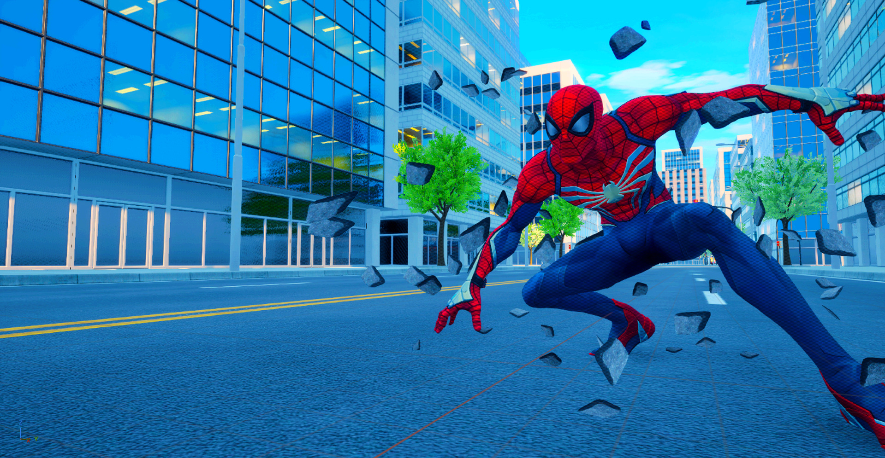
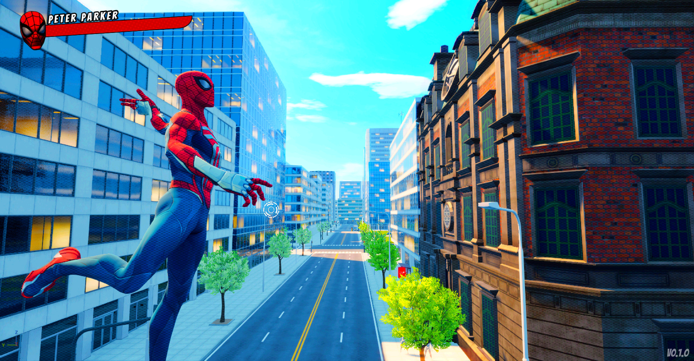
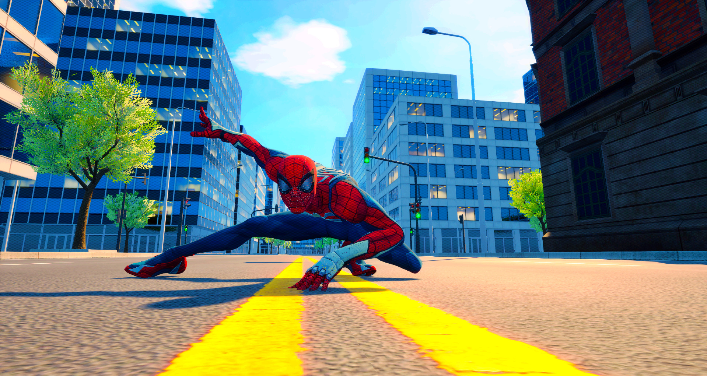
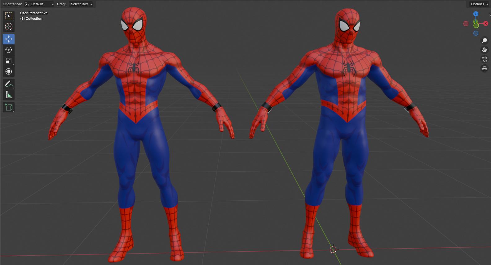
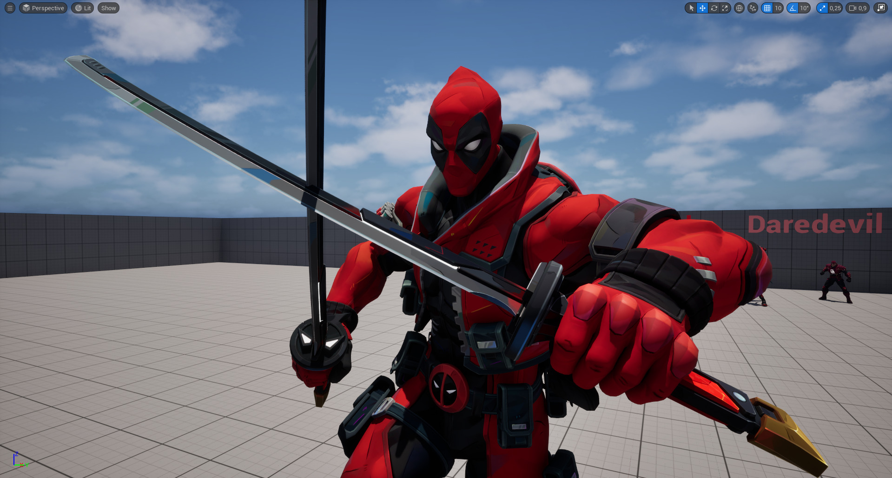

Projet principal
Spiderman Legacy
Jeu d'action sous Unreal Engine 5, que j'ai initié et que je développe depuis environ deux ans avec une équipe de passionnés.
Projet non officiel. Spiderman Legacy n'est affilié ni à Marvel, ni à Sony, ni à leurs sociétés affiliées, et n'est pas un produit officiellement autorisé.
- Moteur
- Unreal Engine 5
- Durée
- Environ 2 ans
- Équipe
- Noyau de 5 personnes, plus des contributeurs selon les besoins
- Rôle
- Fondateur et responsable du projet
Galerie




Mes contributions
- Lancement et direction du projet.
- Game design.
- Level design.
- Développement de certaines fonctionnalités.
- Sound design et création des effets sonores.
- Participation à la préparation des mises à jour et à l'évolution du jeu.
Un travail d'équipe
Spider-Man: Legacy est une création collective. Le noyau de l'équipe compte cinq personnes, rejointes par d'autres contributeurs selon les besoins du projet.
D'autres membres ont notamment contribué aux aspects artistiques, techniques, à l'interface et à l'adaptation mobile. J'ai lancé le projet et j'en assure la direction, ce qui m'a appris à coordonner une équipe et à faire évoluer un jeu dans la durée.
Résultats du projet
Les statistiques du projet que je rapporte ici datent du 21/10/2026